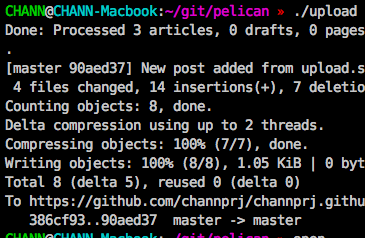
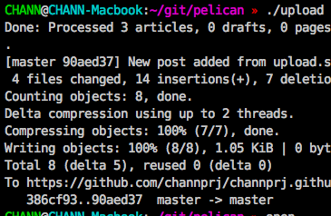

테스트 글입니다.
쉘 스크립트로 Github Pages에 자동 푸시되도록 했는데 잘 되나 테스트 중입니다.
Travis 연동이랑 같이 조만간 스크립트를 좀 더 예쁘게 짜야겠다...
Travis 연동 테스트중.
이미지 테스트

disqus 테스트
Go Top
comments powered by Disqus
테스트 글입니다.
쉘 스크립트로 Github Pages에 자동 푸시되도록 했는데 잘 되나 테스트 중입니다.
Travis 연동이랑 같이 조만간 스크립트를 좀 더 예쁘게 짜야겠다...
Travis 연동 테스트중.
